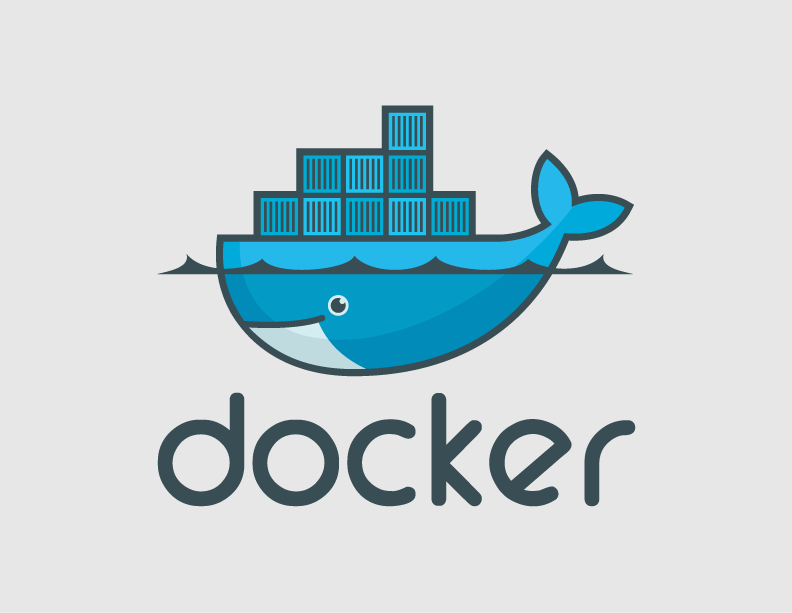

Development in Windows can be a nightmare
- Non-native implementations (Redis)
- Difficult to get libraries (Tensorflow)
- Missing features, bugs, quirks (npm)
- Completely unlike your production environment
Solution? Virtualization!
Virtual Machines
- Bulky
- Difficult maintain and share
- Time consuming to setup

Vagrant
- Still bulky
- Easier to maintain and share
- Still time consuming to setup

Docker
- Tiny footprint
- No need to share local instance
- "Two-button" setup
Demo!
Running and Connecting to Redis 3.2.3 on Windows
with Docker only
(Or running a simple Tensorflow hello world?)